PokéSurvivor 圖鑑：966 隻可選夥伴
圖鑑中的每隻寶可夢都能成為你的夥伴。遊戲收錄九個地區共 966 隻寶可夢，可透過初始選擇或使用遊玩取得的抽卡券獲得。牠們也會以野生敵人、頭目或裂隙中的傳說寶可夢登場。
關都 （第 1 世代 · 151 隻寶可夢）
 #001妙蛙種子草毒初始夥伴
#001妙蛙種子草毒初始夥伴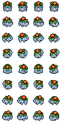
#002妙蛙草草毒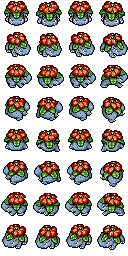
#003妙蛙花草毒 #004小火龍火初始夥伴
#004小火龍火初始夥伴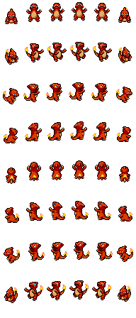
#005火恐龍火 #006噴火龍火飛行
#006噴火龍火飛行 #007傑尼龜水初始夥伴
#007傑尼龜水初始夥伴 #008卡咪龜水
#008卡咪龜水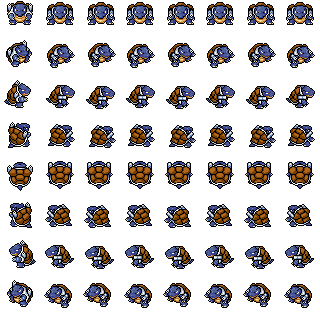
#009水箭龜水 #010綠毛蟲蟲
#010綠毛蟲蟲 #011鐵甲蛹蟲
#011鐵甲蛹蟲 #012巴大蝶蟲飛行
#012巴大蝶蟲飛行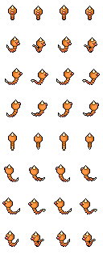
#013獨角蟲蟲毒 #014鐵殼蛹蟲毒
#014鐵殼蛹蟲毒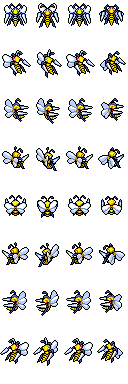
#015大針蜂蟲毒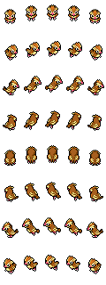
#016波波一般飛行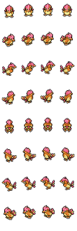
#017比比鳥一般飛行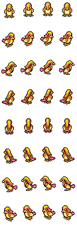
#018大比鳥一般飛行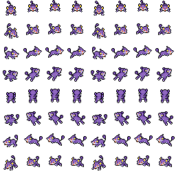
#019小拉達一般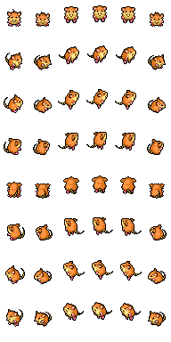
#020拉達一般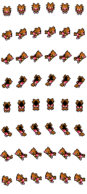
#021烈雀一般飛行 #022大嘴雀一般飛行
#022大嘴雀一般飛行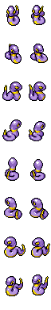
#023阿柏蛇毒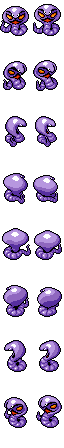
#024阿柏怪毒 #025皮卡丘電
#025皮卡丘電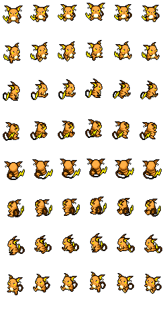
#026雷丘電 #027穿山鼠地面
#027穿山鼠地面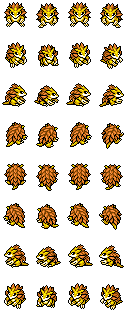
#028穿山王地面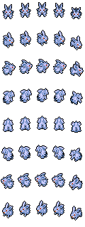
#029尼多蘭毒 #030尼多娜毒
#030尼多娜毒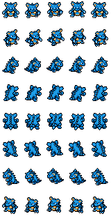
#031尼多后毒地面 #032尼多朗毒
#032尼多朗毒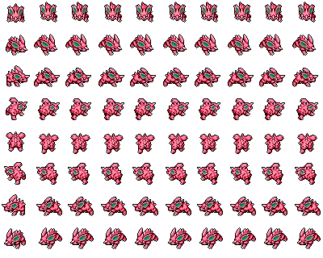
#033尼多力諾毒 #034尼多王毒地面
#034尼多王毒地面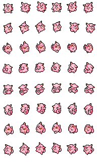
#035皮皮妖精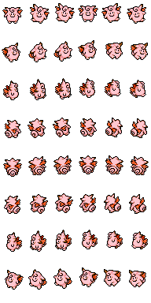
#036皮可西妖精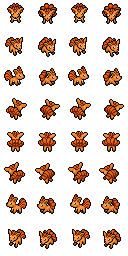
#037六尾火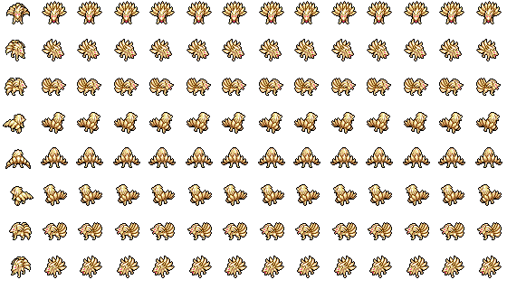
#038九尾火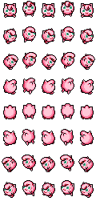
#039胖丁一般妖精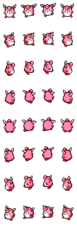
#040胖可丁一般妖精 #041超音蝠毒飛行
#041超音蝠毒飛行 #042大嘴蝠毒飛行
#042大嘴蝠毒飛行 #043走路草草毒
#043走路草草毒 #044臭臭花草毒
#044臭臭花草毒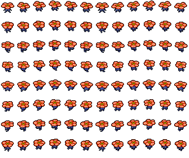
#045霸王花草毒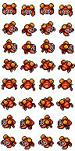
#046派拉斯蟲草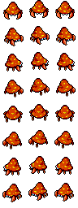
#047派拉斯特蟲草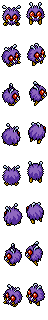
#048毛球蟲毒 #049摩魯蛾蟲毒
#049摩魯蛾蟲毒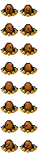
#050地鼠地面 #051三地鼠地面
#051三地鼠地面 #052喵喵一般
#052喵喵一般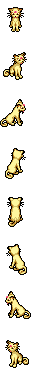
#053貓老大一般 #054可達鴨水初始夥伴
#054可達鴨水初始夥伴 #055哥達鴨水
#055哥達鴨水 #056猴怪格鬥
#056猴怪格鬥 #057火爆猴格鬥
#057火爆猴格鬥 #058卡蒂狗火
#058卡蒂狗火 #059風速狗火
#059風速狗火 #060蚊香蝌蚪水
#060蚊香蝌蚪水 #061蚊香君水
#061蚊香君水 #062蚊香泳士水格鬥
#062蚊香泳士水格鬥 #063凱西超能力
#063凱西超能力 #064勇基拉超能力
#064勇基拉超能力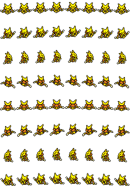
#065胡地超能力 #066腕力格鬥
#066腕力格鬥 #067豪力格鬥
#067豪力格鬥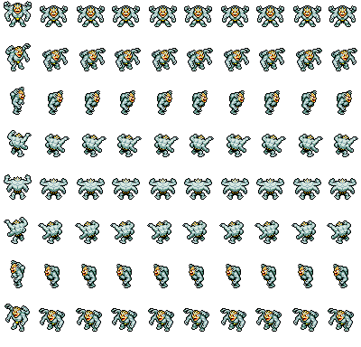
#068怪力格鬥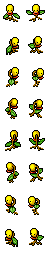
#069喇叭芽草毒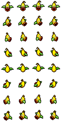
#070口呆花草毒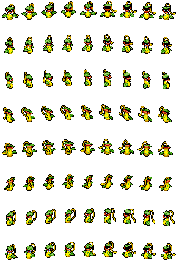
#071大食花草毒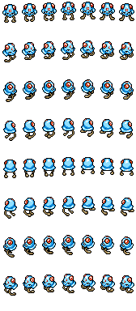
#072瑪瑙水母水毒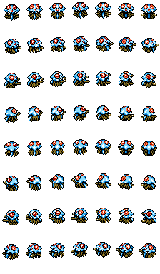
#073毒刺水母水毒 #074小拳石岩石地面
#074小拳石岩石地面 #075隆隆石岩石地面
#075隆隆石岩石地面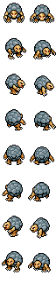
#076隆隆岩岩石地面 #077小火馬火
#077小火馬火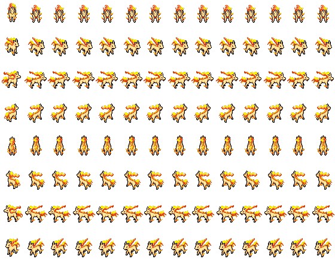
#078烈焰馬火 #079呆呆獸水超能力初始夥伴
#079呆呆獸水超能力初始夥伴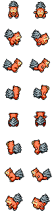
#080呆殼獸水超能力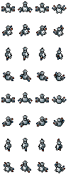
#081小磁怪電鋼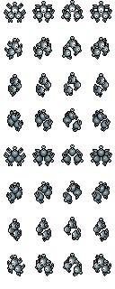
#082三合一磁怪電鋼 #083大蔥鴨一般飛行
#083大蔥鴨一般飛行 #084嘟嘟一般飛行
#084嘟嘟一般飛行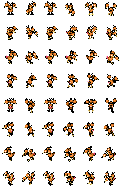
#085嘟嘟利一般飛行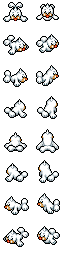
#086小海獅水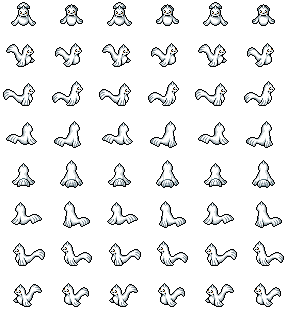
#087白海獅水冰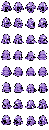
#088臭泥毒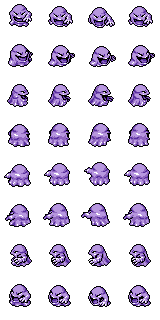
#089臭臭泥毒 #090大舌貝水
#090大舌貝水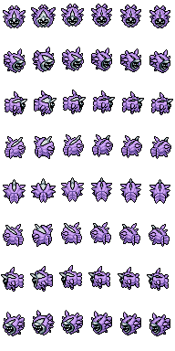
#091刺甲貝水冰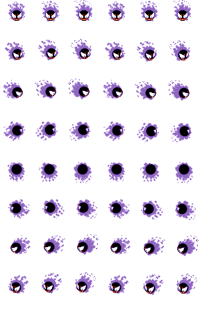
#092鬼斯幽靈毒- #093鬼斯通幽靈毒
- #094耿鬼幽靈毒
- #095大岩蛇岩石地面
 #096催眠貘超能力
#096催眠貘超能力 #097引夢貘人超能力
#097引夢貘人超能力- #098大鉗蟹水
 #099巨鉗蟹水
#099巨鉗蟹水- #100霹靂電球電
- #101頑皮雷彈電
- #102蛋蛋草超能力
 #103椰蛋樹草超能力
#103椰蛋樹草超能力- #104卡拉卡拉地面
 #105嘎啦嘎啦地面
#105嘎啦嘎啦地面 #106飛腿郎格鬥
#106飛腿郎格鬥- #107快拳郎格鬥
 #108大舌頭一般
#108大舌頭一般- #109瓦斯彈毒
- #110雙彈瓦斯毒
- #111獨角犀牛地面岩石
- #112鑽角犀獸地面岩石
 #113吉利蛋一般
#113吉利蛋一般 #114蔓藤怪草
#114蔓藤怪草 #115袋獸一般
#115袋獸一般 #116墨海馬水
#116墨海馬水- #117海刺龍水
 #118角金魚水
#118角金魚水 #119金魚王水
#119金魚王水 #120海星星水
#120海星星水 #121寶石海星水超能力
#121寶石海星水超能力- #122魔牆人偶超能力妖精
 #123飛天螳螂蟲飛行
#123飛天螳螂蟲飛行- #124迷唇姐冰超能力
- #125電擊獸電
- #126鴨嘴火獸火
 #127凱羅斯蟲
#127凱羅斯蟲 #128肯泰羅一般
#128肯泰羅一般 #129鯉魚王水
#129鯉魚王水 #130暴鯉龍水飛行
#130暴鯉龍水飛行- #131拉普拉斯水冰
- #132百變怪一般
 #133伊布一般
#133伊布一般- #134水伊布水
 #135雷伊布電
#135雷伊布電- #136火伊布火
 #137多邊獸一般
#137多邊獸一般- #138菊石獸岩石水
- #139多刺菊石獸岩石水
 #140化石盔岩石水
#140化石盔岩石水- #141鐮刀盔岩石水
 #142化石翼龍岩石飛行
#142化石翼龍岩石飛行- #143卡比獸一般
 #144急凍鳥冰飛行傳說
#144急凍鳥冰飛行傳說 #145閃電鳥電飛行傳說
#145閃電鳥電飛行傳說 #146火焰鳥火飛行傳說
#146火焰鳥火飛行傳說 #147迷你龍龍
#147迷你龍龍 #148哈克龍龍
#148哈克龍龍- #149快龍龍飛行
 #150超夢超能力傳說
#150超夢超能力傳說 #151夢幻超能力傳說
#151夢幻超能力傳說
城都 （第 2 世代 · 100 隻寶可夢）
 #152菊草葉草初始夥伴
#152菊草葉草初始夥伴- #153月桂葉草
- #154大竺葵草
 #155火球鼠火初始夥伴
#155火球鼠火初始夥伴- #156火岩鼠火
 #157火爆獸火
#157火爆獸火 #158小鋸鱷水初始夥伴
#158小鋸鱷水初始夥伴- #159藍鱷水
- #160大力鱷水
 #161尾立一般
#161尾立一般- #162大尾立一般
 #163咕咕一般飛行
#163咕咕一般飛行 #164貓頭夜鷹一般飛行
#164貓頭夜鷹一般飛行- #165芭瓢蟲蟲飛行
 #166安瓢蟲蟲飛行
#166安瓢蟲蟲飛行 #167圓絲蛛蟲毒
#167圓絲蛛蟲毒 #168阿利多斯蟲毒
#168阿利多斯蟲毒- #169叉字蝠毒飛行
 #170燈籠魚水電
#170燈籠魚水電 #171電燈怪水電
#171電燈怪水電- #172皮丘電
 #173皮寶寶妖精
#173皮寶寶妖精 #174寶寶丁一般妖精
#174寶寶丁一般妖精- #175波克比妖精
- #176波克基古妖精飛行
 #177天然雀超能力飛行
#177天然雀超能力飛行- #178天然鳥超能力飛行
 #179咩利羊電
#179咩利羊電 #180茸茸羊電
#180茸茸羊電 #181電龍電
#181電龍電 #182美麗花草
#182美麗花草 #183瑪力露水妖精
#183瑪力露水妖精- #184瑪力露麗水妖精
 #185樹才怪岩石
#185樹才怪岩石 #186蚊香蛙皇水
#186蚊香蛙皇水 #187毽子草草飛行
#187毽子草草飛行- #188毽子花草飛行
 #189毽子棉草飛行
#189毽子棉草飛行 #190長尾怪手一般
#190長尾怪手一般- #191向日種子草
 #192向日花怪草
#192向日花怪草- #193蜻蜻蜓蟲飛行
- #194烏波水地面
 #195沼王水地面
#195沼王水地面 #196太陽伊布超能力
#196太陽伊布超能力 #197月亮伊布惡
#197月亮伊布惡 #198黑暗鴉惡飛行
#198黑暗鴉惡飛行- #199呆呆王水超能力
 #200夢妖幽靈
#200夢妖幽靈- #201未知圖騰超能力
 #202果然翁超能力
#202果然翁超能力 #203麒麟奇一般超能力
#203麒麟奇一般超能力 #204榛果球蟲
#204榛果球蟲 #205佛烈托斯蟲鋼
#205佛烈托斯蟲鋼- #206土龍弟弟一般
 #207天蠍地面飛行
#207天蠍地面飛行 #208大鋼蛇鋼地面
#208大鋼蛇鋼地面- #209布魯妖精
 #210布魯皇妖精
#210布魯皇妖精- #211千針魚水毒
- #212巨鉗螳螂蟲鋼
 #213壺壺蟲岩石
#213壺壺蟲岩石- #214赫拉克羅斯蟲格鬥
 #215狃拉惡冰
#215狃拉惡冰- #216熊寶寶一般
 #217圈圈熊一般
#217圈圈熊一般 #218熔岩蟲火
#218熔岩蟲火- #219熔岩蝸牛火岩石
- #220小山豬冰地面
- #221長毛豬冰地面
 #222太陽珊瑚水岩石
#222太陽珊瑚水岩石 #223鐵炮魚水
#223鐵炮魚水 #224章魚桶水
#224章魚桶水 #225信使鳥冰飛行
#225信使鳥冰飛行 #226巨翅飛魚水飛行
#226巨翅飛魚水飛行 #227盔甲鳥鋼飛行
#227盔甲鳥鋼飛行 #228戴魯比惡火
#228戴魯比惡火- #229黑魯加惡火
 #230刺龍王水龍
#230刺龍王水龍 #231小小象地面
#231小小象地面 #232頓甲地面
#232頓甲地面- #233多邊獸Ⅱ一般
- #234驚角鹿一般
 #235圖圖犬一般
#235圖圖犬一般- #236無畏小子格鬥
 #237戰舞郎格鬥
#237戰舞郎格鬥 #238迷唇娃冰超能力
#238迷唇娃冰超能力- #239電擊怪電
 #240鴨嘴寶寶火
#240鴨嘴寶寶火 #241大奶罐一般
#241大奶罐一般 #242幸福蛋一般
#242幸福蛋一般- #243雷公電傳說
- #244炎帝火傳說
- #245水君水傳說
- #246幼基拉斯岩石地面
 #247沙基拉斯岩石地面
#247沙基拉斯岩石地面- #248班基拉斯岩石惡
 #249洛奇亞超能力飛行傳說
#249洛奇亞超能力飛行傳說 #250鳳王火飛行傳說
#250鳳王火飛行傳說 #251時拉比超能力草傳說
#251時拉比超能力草傳說
豐緣 （第 3 世代 · 135 隻寶可夢）
 #252木守宮草初始夥伴
#252木守宮草初始夥伴- #253森林蜥蜴草
- #254蜥蜴王草
 #255火稚雞火初始夥伴
#255火稚雞火初始夥伴- #256力壯雞火格鬥
 #257火焰雞火格鬥
#257火焰雞火格鬥 #258水躍魚水初始夥伴
#258水躍魚水初始夥伴 #259沼躍魚水地面
#259沼躍魚水地面- #260巨沼怪水地面
- #261土狼犬惡
- #262大狼犬惡
 #263蛇紋熊一般
#263蛇紋熊一般- #264直衝熊一般
- #265刺尾蟲蟲
 #266甲殼繭蟲
#266甲殼繭蟲- #267狩獵鳳蝶蟲飛行
 #268盾甲繭蟲
#268盾甲繭蟲 #269毒粉蛾蟲毒
#269毒粉蛾蟲毒- #270蓮葉童子水草
- #271蓮帽小童水草
 #272樂天河童水草
#272樂天河童水草 #273橡實果草
#273橡實果草 #274長鼻葉草惡
#274長鼻葉草惡- #275狡猾天狗草惡
 #276傲骨燕一般飛行
#276傲骨燕一般飛行- #277大王燕一般飛行
 #278長翅鷗水飛行
#278長翅鷗水飛行 #279大嘴鷗水飛行
#279大嘴鷗水飛行 #280拉魯拉絲超能力妖精
#280拉魯拉絲超能力妖精 #281奇魯莉安超能力妖精
#281奇魯莉安超能力妖精 #282沙奈朵超能力妖精
#282沙奈朵超能力妖精 #283溜溜糖球蟲水
#283溜溜糖球蟲水- #284雨翅蛾蟲飛行
- #285蘑蘑菇草
- #286斗笠菇草格鬥
 #287懶人獺一般
#287懶人獺一般- #288過動猿一般
 #289請假王一般
#289請假王一般- #290土居忍士蟲地面
 #291鐵面忍者蟲飛行
#291鐵面忍者蟲飛行 #292脫殼忍者蟲幽靈
#292脫殼忍者蟲幽靈 #293咕妞妞一般
#293咕妞妞一般 #294吼爆彈一般
#294吼爆彈一般- #295爆音怪一般
 #296幕下力士格鬥
#296幕下力士格鬥- #297鐵掌力士格鬥
- #298露力麗一般妖精
- #299朝北鼻岩石
- #300向尾喵一般
 #301優雅貓一般
#301優雅貓一般- #302勾魂眼惡幽靈
 #303大嘴娃鋼妖精
#303大嘴娃鋼妖精- #304可可多拉鋼岩石
- #305可多拉鋼岩石
- #306波士可多拉鋼岩石
 #307瑪沙那格鬥超能力
#307瑪沙那格鬥超能力 #308恰雷姆格鬥超能力
#308恰雷姆格鬥超能力- #309落雷獸電
- #310雷電獸電
 #311正電拍拍電
#311正電拍拍電- #312負電拍拍電
 #313電螢蟲蟲
#313電螢蟲蟲- #314甜甜螢蟲
- #315毒薔薇草毒
 #316溶食獸毒
#316溶食獸毒- #317吞食獸毒
 #318利牙魚水惡
#318利牙魚水惡- #319巨牙鯊水惡
- #320吼吼鯨水
- #321吼鯨王水
- #322呆火駝火地面
- #323噴火駝火地面
 #324煤炭龜火
#324煤炭龜火- #325跳跳豬超能力
 #326噗噗豬超能力
#326噗噗豬超能力 #327晃晃斑一般
#327晃晃斑一般- #328大顎蟻地面
 #329超音波幼蟲地面龍
#329超音波幼蟲地面龍 #330沙漠蜻蜓地面龍
#330沙漠蜻蜓地面龍- #331刺球仙人掌草
 #332夢歌仙人掌草惡
#332夢歌仙人掌草惡 #333青綿鳥一般飛行
#333青綿鳥一般飛行 #334七夕青鳥龍飛行
#334七夕青鳥龍飛行- #335貓鼬斬一般
 #336飯匙蛇毒
#336飯匙蛇毒- #337月石岩石超能力
 #338太陽岩岩石超能力
#338太陽岩岩石超能力 #339泥泥鰍水地面
#339泥泥鰍水地面 #340鯰魚王水地面
#340鯰魚王水地面- #341龍蝦小兵水
- #342鐵螯龍蝦水惡
- #343天秤偶地面超能力
 #344念力土偶地面超能力
#344念力土偶地面超能力 #345觸手百合岩石草
#345觸手百合岩石草 #346搖籃百合岩石草
#346搖籃百合岩石草- #347太古羽蟲岩石蟲
- #348太古盔甲岩石蟲
- #349醜醜魚水
- #350美納斯水
- #351飄浮泡泡一般
- #352變隱龍一般
 #353怨影娃娃幽靈
#353怨影娃娃幽靈 #354詛咒娃娃幽靈
#354詛咒娃娃幽靈 #355夜巡靈幽靈
#355夜巡靈幽靈 #356彷徨夜靈幽靈
#356彷徨夜靈幽靈- #357熱帶龍草飛行
 #358風鈴鈴超能力
#358風鈴鈴超能力- #359阿勃梭魯惡
- #360小果然超能力
- #361雪童子冰
 #362冰鬼護冰
#362冰鬼護冰- #363海豹球冰水
- #364海魔獅冰水
 #365帝牙海獅冰水
#365帝牙海獅冰水 #366珍珠貝水
#366珍珠貝水 #367獵斑魚水
#367獵斑魚水 #368櫻花魚水
#368櫻花魚水 #369古空棘魚水岩石
#369古空棘魚水岩石- #370愛心魚水
- #371寶貝龍龍
 #372甲殼龍龍
#372甲殼龍龍- #373暴飛龍龍飛行
 #374鐵啞鈴鋼超能力
#374鐵啞鈴鋼超能力 #375金屬怪鋼超能力
#375金屬怪鋼超能力 #376巨金怪鋼超能力
#376巨金怪鋼超能力 #377雷吉洛克岩石傳說
#377雷吉洛克岩石傳說 #378雷吉艾斯冰傳說
#378雷吉艾斯冰傳說- #379雷吉斯奇魯鋼傳說
- #380拉帝亞斯龍超能力傳說
- #381拉帝歐斯龍超能力傳說
 #382蓋歐卡水傳說
#382蓋歐卡水傳說 #383固拉多地面傳說
#383固拉多地面傳說 #384烈空坐龍飛行傳說
#384烈空坐龍飛行傳說 #385基拉祈鋼超能力傳說
#385基拉祈鋼超能力傳說- #386代歐奇希斯超能力傳說
神奧 （第 4 世代 · 107 隻寶可夢）
 #387草苗龜草初始夥伴
#387草苗龜草初始夥伴- #388樹林龜草
 #389土台龜草地面
#389土台龜草地面- #390小火焰猴火初始夥伴
- #391猛火猴火格鬥
- #392烈焰猴火格鬥
 #393波加曼水初始夥伴
#393波加曼水初始夥伴- #394波皇子水
 #395帝王拿波水鋼
#395帝王拿波水鋼 #396姆克兒一般飛行
#396姆克兒一般飛行 #397姆克鳥一般飛行
#397姆克鳥一般飛行 #398姆克鷹一般飛行
#398姆克鷹一般飛行- #399大牙狸一般
- #400大尾狸一般水
 #401圓法師蟲
#401圓法師蟲 #402音箱蟀蟲
#402音箱蟀蟲- #403小貓怪電
- #404勒克貓電
- #405倫琴貓電
 #406含羞苞草毒
#406含羞苞草毒- #407羅絲雷朵草毒
- #408頭蓋龍岩石
- #409戰槌龍岩石
 #410盾甲龍岩石鋼
#410盾甲龍岩石鋼- #411護城龍岩石鋼
 #412結草兒蟲
#412結草兒蟲 #413結草貴婦蟲草
#413結草貴婦蟲草- #414紳士蛾蟲飛行
- #415三蜜蜂蟲飛行
 #416蜂女王蟲飛行
#416蜂女王蟲飛行- #417帕奇利茲電
- #418泳圈鼬水
 #419浮潛鼬水
#419浮潛鼬水- #420櫻花寶草
 #421櫻花兒草
#421櫻花兒草- #422無殼海兔水
 #423海兔獸水地面
#423海兔獸水地面- #424雙尾怪手一般
 #425飄飄球幽靈飛行
#425飄飄球幽靈飛行- #426隨風球幽靈飛行
 #427捲捲耳一般
#427捲捲耳一般- #428長耳兔一般
 #429夢妖魔幽靈
#429夢妖魔幽靈 #430烏鴉頭頭惡飛行
#430烏鴉頭頭惡飛行- #431魅力喵一般
- #432東施喵一般
 #433鈴鐺響超能力
#433鈴鐺響超能力- #434臭鼬噗毒惡
- #435坦克臭鼬毒惡
- #436銅鏡怪鋼超能力
 #437青銅鐘鋼超能力
#437青銅鐘鋼超能力- #438盆才怪岩石
- #439魔尼尼超能力妖精
- #440小福蛋一般
 #441聒噪鳥一般飛行
#441聒噪鳥一般飛行 #442花岩怪幽靈惡
#442花岩怪幽靈惡 #443圓陸鯊龍地面
#443圓陸鯊龍地面- #444尖牙陸鯊龍地面
 #445烈咬陸鯊龍地面
#445烈咬陸鯊龍地面 #446小卡比獸一般
#446小卡比獸一般 #447利歐路格鬥
#447利歐路格鬥 #448路卡利歐格鬥鋼
#448路卡利歐格鬥鋼- #449沙河馬地面
- #450河馬獸地面
- #451鉗尾蠍毒蟲
 #452龍王蠍毒惡
#452龍王蠍毒惡- #453不良蛙毒格鬥
 #454毒骷蛙毒格鬥
#454毒骷蛙毒格鬥- #455尖牙籠草
 #456螢光魚水
#456螢光魚水 #457霓虹魚水
#457霓虹魚水- #458小球飛魚水飛行
 #459雪笠怪草冰
#459雪笠怪草冰 #460暴雪王草冰
#460暴雪王草冰- #461瑪狃拉惡冰
- #462自爆磁怪電鋼
 #463大舌舔一般
#463大舌舔一般 #464超甲狂犀地面岩石
#464超甲狂犀地面岩石 #465巨蔓藤草
#465巨蔓藤草- #466電擊魔獸電
- #467鴨嘴炎獸火
 #468波克基斯妖精飛行
#468波克基斯妖精飛行- #469遠古巨蜓蟲飛行
- #470葉伊布草
 #471冰伊布冰
#471冰伊布冰- #472天蠍王地面飛行
- #473象牙豬冰地面
- #474多邊獸Ｚ一般
- #475艾路雷朵超能力格鬥
 #476大朝北鼻岩石鋼
#476大朝北鼻岩石鋼- #477黑夜魔靈幽靈
- #478雪妖女冰幽靈
- #479洛托姆電幽靈
 #480由克希超能力傳說
#480由克希超能力傳說- #481艾姆利多超能力傳說
 #482亞克諾姆超能力傳說
#482亞克諾姆超能力傳說 #483帝牙盧卡鋼龍傳說
#483帝牙盧卡鋼龍傳說- #484帕路奇亞水龍傳說
- #485席多藍恩火鋼傳說
 #486雷吉奇卡斯一般傳說
#486雷吉奇卡斯一般傳說 #487騎拉帝納幽靈龍傳說
#487騎拉帝納幽靈龍傳說- #488克雷色利亞超能力傳說
 #489霏歐納水傳說
#489霏歐納水傳說 #490瑪納霏水傳說
#490瑪納霏水傳說 #491達克萊伊惡傳說
#491達克萊伊惡傳說- #492謝米草傳說
 #493阿爾宙斯一般傳說
#493阿爾宙斯一般傳說
合眾 （第 5 世代 · 141 隻寶可夢）
 #494比克提尼超能力火傳說
#494比克提尼超能力火傳說 #495藤藤蛇草初始夥伴
#495藤藤蛇草初始夥伴- #496青藤蛇草
- #497君主蛇草
- #498暖暖豬火初始夥伴
- #499炒炒豬火格鬥
- #500炎武王火格鬥
- #501水水獺水初始夥伴
 #502雙刃丸水
#502雙刃丸水- #503大劍鬼水
 #504探探鼠一般
#504探探鼠一般 #505步哨鼠一般
#505步哨鼠一般- #506小約克一般
 #507哈約克一般
#507哈約克一般- #508長毛狗一般
- #509扒手貓惡
 #510酷豹惡
#510酷豹惡- #511花椰猴草
 #512花椰猿草
#512花椰猿草 #513爆香猴火
#513爆香猴火 #515冷水猴水
#515冷水猴水- #517食夢夢超能力
- #518夢夢蝕超能力
- #519豆豆鴿一般飛行
 #521高傲雉雞一般飛行
#521高傲雉雞一般飛行 #524石丸子岩石
#524石丸子岩石 #525地幔岩岩石
#525地幔岩岩石 #526龐岩怪岩石
#526龐岩怪岩石- #527滾滾蝙蝠超能力飛行
 #528心蝙蝠超能力飛行
#528心蝙蝠超能力飛行- #529螺釘地鼠地面
 #530龍頭地鼠地面鋼
#530龍頭地鼠地面鋼- #531差不多娃娃一般
 #532搬運小匠格鬥
#532搬運小匠格鬥- #533鐵骨土人格鬥
 #534修建老匠格鬥
#534修建老匠格鬥 #535圓蝌蚪水
#535圓蝌蚪水 #536藍蟾蜍水地面
#536藍蟾蜍水地面 #537蟾蜍王水地面
#537蟾蜍王水地面 #539打擊鬼格鬥
#539打擊鬼格鬥- #540蟲寶包蟲草
 #541寶包繭蟲草
#541寶包繭蟲草- #542保母蟲蟲草
 #543百足蜈蚣蟲毒
#543百足蜈蚣蟲毒 #544車輪毬蟲毒
#544車輪毬蟲毒- #545蜈蚣王蟲毒
 #546木棉球草妖精
#546木棉球草妖精 #547風妖精草妖精
#547風妖精草妖精- #548百合根娃娃草
- #549裙兒小姐草
- #550野蠻鱸魚水
 #551黑眼鱷地面惡
#551黑眼鱷地面惡 #552混混鱷地面惡
#552混混鱷地面惡 #553流氓鱷地面惡
#553流氓鱷地面惡 #554火紅不倒翁火
#554火紅不倒翁火- #555達摩狒狒火
- #556沙鈴仙人掌草
 #557石居蟹蟲岩石
#557石居蟹蟲岩石 #559滑滑小子惡格鬥
#559滑滑小子惡格鬥- #560頭巾混混惡格鬥
- #561象徵鳥超能力飛行
 #562哭哭面具幽靈
#562哭哭面具幽靈 #563死神棺幽靈
#563死神棺幽靈- #566始祖小鳥岩石飛行
- #567始祖大鳥岩石飛行
 #568破破袋毒
#568破破袋毒- #569灰塵山毒
 #570索羅亞惡
#570索羅亞惡- #571索羅亞克惡
- #572泡沫栗鼠一般
- #573奇諾栗鼠一般
 #574哥德寶寶超能力
#574哥德寶寶超能力 #575哥德小童超能力
#575哥德小童超能力 #576哥德小姐超能力
#576哥德小姐超能力 #577單卵細胞球超能力
#577單卵細胞球超能力- #578雙卵細胞球超能力
- #579人造細胞卵超能力
- #580鴨寶寶水飛行
 #581舞天鵝水飛行
#581舞天鵝水飛行 #582迷你冰冰
#582迷你冰冰- #583多多冰冰
 #584雙倍多多冰冰
#584雙倍多多冰冰 #585四季鹿一般草
#585四季鹿一般草 #586萌芽鹿一般草
#586萌芽鹿一般草 #587電飛鼠電飛行
#587電飛鼠電飛行- #588蓋蓋蟲蟲
- #589騎士蝸牛蟲鋼
 #590哎呀球菇草毒
#590哎呀球菇草毒 #594保母曼波水
#594保母曼波水- #595電電蟲蟲電
 #596電蜘蛛蟲電
#596電蜘蛛蟲電 #597種子鐵球草鋼
#597種子鐵球草鋼 #598堅果啞鈴草鋼
#598堅果啞鈴草鋼- #599齒輪兒鋼
 #600齒輪組鋼
#600齒輪組鋼- #601齒輪怪鋼
 #602麻麻小魚電
#602麻麻小魚電 #603麻麻鰻電
#603麻麻鰻電- #604麻麻鰻魚王電
- #605小灰怪超能力
- #606大宇怪超能力
 #607燭光靈幽靈火
#607燭光靈幽靈火- #608燈火幽靈幽靈火
 #609水晶燈火靈幽靈火
#609水晶燈火靈幽靈火- #610牙牙龍
 #611斧牙龍龍
#611斧牙龍龍- #612雙斧戰龍龍
- #613噴嚏熊冰
- #614凍原熊冰
- #615幾何雪花冰
- #617敏捷蟲蟲
 #619功夫鼬格鬥
#619功夫鼬格鬥- #620師父鼬格鬥
- #621赤面龍龍
 #622泥偶小人地面幽靈
#622泥偶小人地面幽靈- #623泥偶巨人地面幽靈
- #624駒刀小兵惡鋼
- #625劈斬司令惡鋼
- #627毛頭小鷹一般飛行
 #628勇士雄鷹一般飛行
#628勇士雄鷹一般飛行- #629禿鷹丫頭惡飛行
- #630禿鷹娜惡飛行
 #631熔蟻獸火
#631熔蟻獸火- #632鐵蟻蟲鋼
 #633單首龍惡龍
#633單首龍惡龍- #634雙首暴龍惡龍
- #635三首惡龍惡龍
- #636燃燒蟲蟲火
- #637火神蛾蟲火
 #638勾帕路翁鋼格鬥傳說
#638勾帕路翁鋼格鬥傳說- #639代拉基翁岩石格鬥傳說
 #640畢力吉翁草格鬥傳說
#640畢力吉翁草格鬥傳說- #641龍捲雲飛行傳說
 #642雷電雲電飛行傳說
#642雷電雲電飛行傳說- #643萊希拉姆龍火傳說
- #644捷克羅姆龍電傳說
 #645土地雲地面飛行傳說
#645土地雲地面飛行傳說- #646酋雷姆龍冰傳說
- #647凱路迪歐水格鬥傳說
- #648美洛耶塔一般超能力傳說
 #649蓋諾賽克特蟲鋼傳說
#649蓋諾賽克特蟲鋼傳說
卡洛斯 （第 6 世代 · 70 隻寶可夢）
 #650哈力栗草初始夥伴
#650哈力栗草初始夥伴- #651胖胖哈力草
 #652布里卡隆草格鬥
#652布里卡隆草格鬥 #653火狐狸火初始夥伴
#653火狐狸火初始夥伴 #654長尾火狐火
#654長尾火狐火 #655妖火紅狐火超能力
#655妖火紅狐火超能力- #656呱呱泡蛙水初始夥伴
 #657呱頭蛙水
#657呱頭蛙水 #658甲賀忍蛙水惡
#658甲賀忍蛙水惡 #659掘掘兔一般
#659掘掘兔一般 #660掘地兔一般地面
#660掘地兔一般地面 #661小箭雀一般飛行
#661小箭雀一般飛行- #662火箭雀火飛行
- #663烈箭鷹火飛行
- #664粉蝶蟲蟲
 #665粉蝶蛹蟲
#665粉蝶蛹蟲- #666彩粉蝶蟲飛行
 #667小獅獅火一般
#667小獅獅火一般 #669花蓓蓓妖精
#669花蓓蓓妖精 #670花葉蒂妖精
#670花葉蒂妖精- #671花潔夫人妖精
 #672坐騎小羊草
#672坐騎小羊草 #673坐騎山羊草
#673坐騎山羊草- #674頑皮熊貓格鬥
- #675流氓熊貓格鬥惡
 #676多麗米亞一般
#676多麗米亞一般- #677妙喵超能力
 #678超能妙喵超能力
#678超能妙喵超能力- #679獨劍鞘鋼幽靈
- #680雙劍鞘鋼幽靈
 #681堅盾劍怪鋼幽靈
#681堅盾劍怪鋼幽靈 #682粉香香妖精
#682粉香香妖精 #684綿綿泡芙妖精
#684綿綿泡芙妖精 #685胖甜妮妖精
#685胖甜妮妖精 #686好啦魷惡超能力
#686好啦魷惡超能力 #687烏賊王惡超能力
#687烏賊王惡超能力- #688龜腳腳岩石水
 #689龜足巨鎧岩石水
#689龜足巨鎧岩石水 #690垃垃藻毒水
#690垃垃藻毒水- #691毒藻龍毒龍
- #692鐵臂槍蝦水
 #693鋼炮臂蝦水
#693鋼炮臂蝦水- #694傘電蜥電一般
 #695光電傘蜥電一般
#695光電傘蜥電一般 #696寶寶暴龍岩石龍
#696寶寶暴龍岩石龍- #697怪顎龍岩石龍
- #698冰雪龍岩石冰
 #699冰雪巨龍岩石冰
#699冰雪巨龍岩石冰 #700仙子伊布妖精
#700仙子伊布妖精- #701摔角鷹人格鬥飛行
- #702咚咚鼠電妖精
- #703小碎鑽岩石妖精
- #704黏黏寶龍
- #705黏美兒龍
 #706黏美龍龍
#706黏美龍龍 #707鑰圈兒鋼妖精
#707鑰圈兒鋼妖精- #708小木靈幽靈草
- #709朽木妖幽靈草
 #710南瓜精幽靈草
#710南瓜精幽靈草- #711南瓜怪人幽靈草
 #712冰寶冰
#712冰寶冰 #713冰岩怪冰
#713冰岩怪冰 #714嗡蝠飛行龍
#714嗡蝠飛行龍 #715音波龍飛行龍
#715音波龍飛行龍- #716哲爾尼亞斯妖精傳說
 #717伊裴爾塔爾惡飛行傳說
#717伊裴爾塔爾惡飛行傳說- #718基格爾德龍地面傳說
- #719蒂安希岩石妖精傳說
 #720胡帕超能力幽靈傳說
#720胡帕超能力幽靈傳說- #721波爾凱尼恩火水傳說
阿羅拉 （第 7 世代 · 83 隻寶可夢）
 #722木木梟草飛行初始夥伴
#722木木梟草飛行初始夥伴 #723投羽梟草飛行
#723投羽梟草飛行- #724狙射樹梟草幽靈
- #725火斑喵火初始夥伴
 #726炎熱喵火
#726炎熱喵火 #727熾焰咆哮虎火惡
#727熾焰咆哮虎火惡 #728球球海獅水初始夥伴
#728球球海獅水初始夥伴 #729花漾海獅水
#729花漾海獅水- #730西獅海壬水妖精
- #731小篤兒一般飛行
 #734貓鼬少一般
#734貓鼬少一般 #736強顎雞母蟲蟲
#736強顎雞母蟲蟲 #737蟲電寶蟲電
#737蟲電寶蟲電 #738鍬農炮蟲蟲電
#738鍬農炮蟲蟲電- #739好勝蟹格鬥
 #740好勝毛蟹格鬥冰
#740好勝毛蟹格鬥冰- #741花舞鳥火飛行
 #742萌虻蟲妖精
#742萌虻蟲妖精 #743蝶結萌虻蟲妖精
#743蝶結萌虻蟲妖精- #744岩狗狗岩石
- #745鬃岩狼人岩石
- #746弱丁魚水
- #747好壞星毒水
- #748超壞星毒水
- #749泥驢仔地面
- #750重泥挽馬地面
- #751滴蛛水蟲
 #752滴蛛霸水蟲
#752滴蛛霸水蟲 #753偽螳草草
#753偽螳草草 #754蘭螳花草
#754蘭螳花草 #755睡睡菇草妖精
#755睡睡菇草妖精- #757夜盜火蜥毒火
 #758焰后蜥毒火
#758焰后蜥毒火- #759童偶熊一般格鬥
- #760穿著熊一般格鬥
- #761甜竹竹草
- #762甜舞妮草
- #763甜冷美后草
- #764花療環環妖精
- #766投擲猴格鬥
 #767膽小蟲蟲水
#767膽小蟲蟲水- #768具甲武者蟲水
- #769沙丘娃幽靈地面
- #770噬沙堡爺幽靈地面
 #771拳海參水
#771拳海參水- #772屬性：空一般傳說
 #773銀伴戰獸一般傳說
#773銀伴戰獸一般傳說 #774小隕星岩石飛行
#774小隕星岩石飛行 #775樹枕尾熊一般
#775樹枕尾熊一般- #776爆焰龜獸火龍
- #777托戈德瑪爾電鋼
- #778謎擬Ｑ幽靈妖精
 #779磨牙彩皮魚水超能力
#779磨牙彩皮魚水超能力 #780老翁龍一般龍
#780老翁龍一般龍- #781破破舵輪幽靈草
 #782心鱗寶龍
#782心鱗寶龍 #783鱗甲龍龍格鬥
#783鱗甲龍龍格鬥 #784杖尾鱗甲龍龍格鬥
#784杖尾鱗甲龍龍格鬥- #785卡璞・鳴鳴電妖精傳說
- #786卡璞・蝶蝶超能力妖精傳說
- #787卡璞・哞哞草妖精傳說
- #788卡璞・鰭鰭水妖精傳說
- #789科斯莫古超能力傳說
- #790科斯莫姆超能力傳說
- #791索爾迦雷歐超能力鋼傳說
 #792露奈雅拉超能力幽靈傳說
#792露奈雅拉超能力幽靈傳說 #793虛吾伊德岩石毒
#793虛吾伊德岩石毒- #794爆肌蚊蟲格鬥
 #795費洛美螂蟲格鬥
#795費洛美螂蟲格鬥 #796電束木電
#796電束木電 #797鐵火輝夜鋼飛行
#797鐵火輝夜鋼飛行 #798紙御劍草鋼
#798紙御劍草鋼- #799惡食大王惡龍
- #800奈克洛茲瑪超能力傳說
- #801瑪機雅娜鋼妖精傳說
- #802瑪夏多格鬥幽靈傳說
 #803毒貝比毒
#803毒貝比毒- #804四顎針龍毒龍
- #805壘磊石岩石鋼
- #806砰頭小丑火幽靈
 #807捷拉奧拉電傳說
#807捷拉奧拉電傳說- #808美錄坦鋼傳說
 #809美錄梅塔鋼傳說
#809美錄梅塔鋼傳說
伽勒爾 （第 8 世代 · 87 隻寶可夢）
- #810敲音猴草初始夥伴
- #811啪咚猴草
- #812轟擂金剛猩草
- #813炎兔兒火初始夥伴
- #814騰蹴小將火
 #815閃焰王牌火
#815閃焰王牌火 #816淚眼蜥水初始夥伴
#816淚眼蜥水初始夥伴 #817變澀蜥水
#817變澀蜥水 #818千面避役水
#818千面避役水- #819貪心栗鼠一般
- #820藏飽栗鼠一般
 #821稚山雀飛行
#821稚山雀飛行 #822藍鴉飛行
#822藍鴉飛行- #823鋼鎧鴉飛行鋼
- #824索偵蟲蟲
 #825天罩蟲蟲超能力
#825天罩蟲蟲超能力 #826以歐路普蟲超能力
#826以歐路普蟲超能力- #827偷兒狐惡
- #828狐大盜惡
 #829幼棉棉草
#829幼棉棉草 #830白蓬蓬草
#830白蓬蓬草- #831毛辮羊一般
- #832毛毛角羊一般
- #833咬咬龜水
- #834暴噬龜水岩石
 #835來電汪電
#835來電汪電 #836逐電犬電
#836逐電犬電 #840啃果蟲草龍
#840啃果蟲草龍 #841蘋裹龍草龍
#841蘋裹龍草龍 #842豐蜜龍草龍
#842豐蜜龍草龍 #843沙包蛇地面
#843沙包蛇地面 #844沙螺蟒地面
#844沙螺蟒地面 #845古月鳥飛行水
#845古月鳥飛行水 #846刺梭魚水
#846刺梭魚水 #847戽斗尖梭水
#847戽斗尖梭水- #848毒電嬰電毒
- #849顫弦蠑螈電毒
 #850燒火蚣火蟲
#850燒火蚣火蟲 #851焚焰蚣火蟲
#851焚焰蚣火蟲- #852拳拳蛸格鬥
 #853八爪武師格鬥
#853八爪武師格鬥- #854來悲茶幽靈
 #855怖思壺幽靈
#855怖思壺幽靈- #856迷布莉姆超能力
 #857提布莉姆超能力
#857提布莉姆超能力 #858布莉姆溫超能力妖精
#858布莉姆溫超能力妖精- #859搗蛋小妖惡妖精
 #860詐唬魔惡妖精
#860詐唬魔惡妖精 #861長毛巨魔惡妖精
#861長毛巨魔惡妖精 #862堵攔熊惡一般
#862堵攔熊惡一般- #863喵頭目鋼
- #864魔靈珊瑚幽靈
- #867死神板地面幽靈
 #868小仙奶妖精
#868小仙奶妖精- #869霜奶仙妖精
- #871啪嚓海膽電
 #872雪吞蟲冰蟲
#872雪吞蟲冰蟲- #873雪絨蛾冰蟲
- #874巨石丁岩石
 #875冰砌鵝冰
#875冰砌鵝冰 #876愛管侍超能力一般
#876愛管侍超能力一般 #877莫魯貝可電惡
#877莫魯貝可電惡 #880雷鳥龍電龍
#880雷鳥龍電龍- #881雷鳥海獸電冰
- #882鰓魚龍水龍
- #883鰓魚海獸水冰
 #884鋁鋼龍鋼龍
#884鋁鋼龍鋼龍- #885多龍梅西亞龍幽靈
- #886多龍奇龍幽靈
 #887多龍巴魯托龍幽靈
#887多龍巴魯托龍幽靈- #888蒼響妖精傳說
- #889藏瑪然特格鬥傳說
- #890無極汰那毒龍傳說
 #891熊徒弟格鬥傳說
#891熊徒弟格鬥傳說- #892武道熊師格鬥惡傳說
 #894雷吉艾勒奇電傳說
#894雷吉艾勒奇電傳說 #895雷吉鐸拉戈龍傳說
#895雷吉鐸拉戈龍傳說- #896雪暴馬冰傳說
 #897靈幽馬幽靈傳說
#897靈幽馬幽靈傳說 #898蕾冠王超能力草傳說
#898蕾冠王超能力草傳說- #899詭角鹿一般超能力
 #900劈斧螳螂蟲岩石
#900劈斧螳螂蟲岩石 #901月月熊地面一般
#901月月熊地面一般 #902幽尾玄魚水幽靈
#902幽尾玄魚水幽靈- #903大狃拉格鬥毒
- #904萬針魚惡毒
- #905眷戀雲妖精飛行傳說
帕底亞 （第 9 世代 · 92 隻寶可夢）
 #906新葉喵草初始夥伴
#906新葉喵草初始夥伴- #907蒂蕾喵草
 #908魔幻假面喵草惡
#908魔幻假面喵草惡 #909呆火鱷火初始夥伴
#909呆火鱷火初始夥伴 #910炙燙鱷火
#910炙燙鱷火 #911骨紋巨聲鱷火幽靈
#911骨紋巨聲鱷火幽靈 #912潤水鴨水初始夥伴
#912潤水鴨水初始夥伴- #913湧躍鴨水
 #914狂歡浪舞鴨水格鬥
#914狂歡浪舞鴨水格鬥- #915愛吃豚一般
 #916飄香豚一般
#916飄香豚一般- #917團珠蛛蟲
 #918操陷蛛蟲
#918操陷蛛蟲 #919豆蟋蟀蟲
#919豆蟋蟀蟲 #920烈腿蝗蟲惡
#920烈腿蝗蟲惡 #921布撥電
#921布撥電 #922布土撥電格鬥
#922布土撥電格鬥 #923巴布土撥電格鬥
#923巴布土撥電格鬥 #924一對鼠一般
#924一對鼠一般- #925一家鼠一般
 #926狗仔包妖精
#926狗仔包妖精 #927麻花犬妖精
#927麻花犬妖精- #928迷你芙草一般
 #930奧利瓦草一般
#930奧利瓦草一般 #932鹽石寶岩石
#932鹽石寶岩石 #933鹽石壘岩石
#933鹽石壘岩石 #934鹽石巨靈岩石
#934鹽石巨靈岩石 #935炭小侍火
#935炭小侍火 #936紅蓮鎧騎火超能力
#936紅蓮鎧騎火超能力- #937蒼炎刃鬼火幽靈
- #938光蚪仔電
- #939電肚蛙電
 #940電海燕電飛行
#940電海燕電飛行- #941大電海燕電飛行
 #946納噬草草幽靈
#946納噬草草幽靈- #951熱辣娃草
- #952狠辣椒草火
 #953蟲滾泥蟲
#953蟲滾泥蟲 #955飄飄雛超能力
#955飄飄雛超能力 #957小鍛匠妖精鋼
#957小鍛匠妖精鋼 #958巧鍛匠妖精鋼
#958巧鍛匠妖精鋼- #959巨鍛匠妖精鋼
 #960海地鼠水
#960海地鼠水- #961三海地鼠水
- #963波普海豚水
 #964海豚俠水
#964海豚俠水 #965噗隆隆鋼毒
#965噗隆隆鋼毒 #966普隆隆姆鋼毒
#966普隆隆姆鋼毒 #967摩托蜥龍一般
#967摩托蜥龍一般 #968拖拖蚓鋼
#968拖拖蚓鋼 #969晶光芽岩石毒
#969晶光芽岩石毒- #970晶光花岩石毒
 #971墓仔狗幽靈
#971墓仔狗幽靈- #972墓揚犬幽靈
- #974走鯨冰
- #975浩大鯨冰
- #976輕身鱈水超能力
 #977吃吼霸水
#977吃吼霸水 #978米立龍龍水
#978米立龍龍水 #979棄世猴格鬥幽靈
#979棄世猴格鬥幽靈 #980土王毒地面
#980土王毒地面- #981奇麒麟一般超能力
- #982土龍節節一般
 #983仆刀將軍惡鋼
#983仆刀將軍惡鋼- #984雄偉牙地面格鬥
 #985吼叫尾妖精超能力
#985吼叫尾妖精超能力 #987振翼髮幽靈妖精
#987振翼髮幽靈妖精 #988爬地翅蟲格鬥
#988爬地翅蟲格鬥 #989沙鐵皮電地面
#989沙鐵皮電地面- #991鐵包袱冰水
- #992鐵臂膀格鬥電
- #994鐵毒蛾火毒
- #995鐵荊棘岩石電
 #996涼脊龍龍冰
#996涼脊龍龍冰- #997凍脊龍龍冰
- #998戟脊龍龍冰
- #1000賽富豪鋼幽靈
- #1004古玉魚惡火傳說
 #1005轟鳴月龍惡
#1005轟鳴月龍惡 #1006鐵武者妖精格鬥
#1006鐵武者妖精格鬥 #1007故勒頓格鬥龍傳說
#1007故勒頓格鬥龍傳說- #1009波盪水水龍
 #1010鐵斑葉草超能力
#1010鐵斑葉草超能力- #1011裹蜜蟲草龍
- #1012斯魔茶草幽靈
 #1013來悲粗茶草幽靈
#1013來悲粗茶草幽靈 #1015願增猿毒超能力傳說
#1015願增猿毒超能力傳說 #1016吉雉雞毒妖精傳說
#1016吉雉雞毒妖精傳說 #1017厄鬼椪草傳說
#1017厄鬼椪草傳說 #1018鋁鋼橋龍鋼龍
#1018鋁鋼橋龍鋼龍 #1019蜜集大蛇草龍
#1019蜜集大蛇草龍- #1024太樂巴戈斯一般傳說